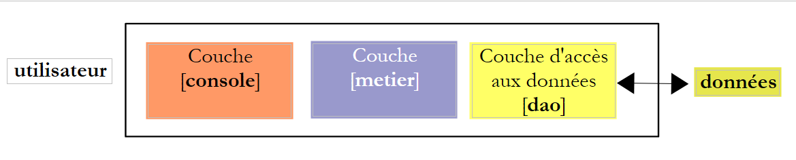
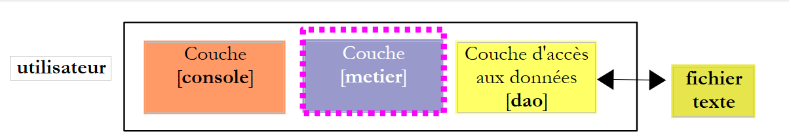
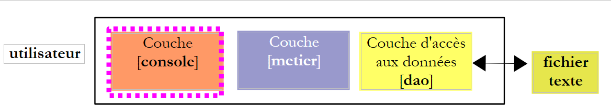

8. Application Exercise – [Tax Calculation] with a layered architecture
 |
Here we revisit the exercise described in Section 4.1. We start with the text-file version described in Section 4.3. To handle this example with objects, we will use a three-tier architecture:
 |
- the [DAO] (Data Access Object) layer handles data access. In the following, this data will first be found in a text file, then in a MySQL database;
- the [business] layer handles business logic, in this case tax calculation. It does not handle data. This data can come from two sources:
- the [DAO] layer for persistent data;
- the [console] layer for user-provided data.
- The [console] layer handles interactions with the user.
In what follows, the [DAO] and [business] layers will each be implemented using a class. The [console] layer will be implemented by the main program.
We will assume that all implementations of the [dao] layer provide the getData() method, which returns a tuple of three elements (limits, coeffR, coeffN)—the three data arrays required to calculate the tax. In other languages, this is called an interface. An interface defines methods (here, getData) that classes implementing this interface must have.
The [business] layer will be implemented by a class whose constructor takes a reference to the [dao] layer as a parameter, ensuring communication between the two layers.
8.1. The [DAO] layer
We will combine the various classes required for the application into a single file, impots.py. The objects in this file will then be imported into the scripts that require them.
We start with the case where the data is in a text file, as in the example in Section 4.3.
 |
The code for the [ ImpotsFile] class (impots.py) that implements the [DAO] layer is as follows:
Notes:
- lines 7-8: we define an ImpotsError class derived from the Exception class. This class adds nothing to the Exception class. We use it solely to have a custom exception class. This class could be expanded later;
- lines 11–18: a class of utility methods. Here, the cutNewLineChar method removes any line break characters from a string;
- line 25: opening the file may throw the IOError exception;
- lines 32, 39, 46: the custom ImpotsError exception is thrown;
- the code is similar to that studied in the example in Section 4.3.
8.2. The [business] layer
 |
The [ ImpotsMetier] class (impots.py) that implements the [business] layer is as follows:
class ImpotsMetier:
# constructeur
# on récupère un pointeur sur la couche [dao]
def __init__(self, dao):
self.dao=dao
# calcul de l'impôt
# --------------------------------------------------------------------------
def calculer(self,marie,enfants,salaire):
# marié : oui, non
# enfants : nombre d'enfants
# salaire : salaire annuel
# on demande à la couche [dao] les données nécessaires au calcul
(limites, coeffR, coeffN)=self.dao.getData()
# nombre de parts
marie=marie.lower()
if(marie=="oui"):
nbParts=float(enfants)/2+2
else:
nbParts=float(enfants)/2+1
# une 1/2 part de plus si au moins 3 enfants
if enfants>=3:
nbParts+=0.5
# revenu imposable
revenuImposable=0.72*salaire
# quotient familial
quotient=revenuImposable/nbParts
# est mis à la fin du tableau limites pour arrêter la boucle qui suit
limites[len(limites)-1]=quotient
# calcul de l'impôt
i=0
while quotient>limites[i] :
i=i+1
# du fait qu'on a placé quotient à la fin du tableau limites, la boucle précédente
# ne peut déborder du tableau limites
# maintenant on peut calculer l'impôt
return math.floor(revenuImposable*(float)(coeffR[i])-nbParts*(float)(coeffN[i]))
Notes:
- lines 5-6: the class constructor receives a reference to the [dao] layer as a parameter;
- line 16: we use the getData method of the [dao] layer to retrieve the data needed to calculate the tax;
- the rest of the code is analogous to that studied in the example in Section 4.3.
8.3. The [console] layer
 |
The script implementing the [console] layer (impots-03) is as follows:
Notes:
- Line 4: We import all objects from the impots.py file, which contains the class definitions. Once this is done, we can use these objects as if they were in the same file as the script;
- Lines 17–21: We instantiate both the [dao] layer and the [business] layer with handling for potential exceptions;
- line 18: we instantiate the [dao] layer and then the [business] layer. We store the reference to the [business] layer;
- line 19: we handle the two exceptions that may occur;
- the rest of the code is similar to that studied in the example in Section 4.3.
8.4. Results
The same as those already obtained in the versions using arrays and files.
The data file impots.txt:
12620:13190:15640:24740:31810:39970:48360:55790:92970:127860:151250:172040:195000:0
0:0.05:0.1:0.15:0.2:0.25:0.3:0.35:0.4:0.45:0.5:0.55:0.6:0.65
0:631:1290.5:2072.5:3309.5:4900:6898.5:9316.5:12106:16754.5:23147.5:30710:39312:49062
The data file data.txt:
The results.txt file containing the results: